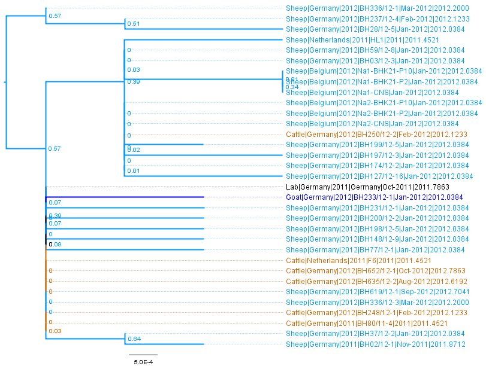
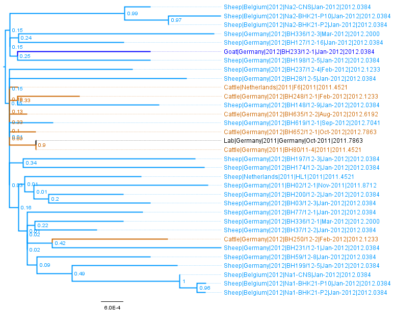
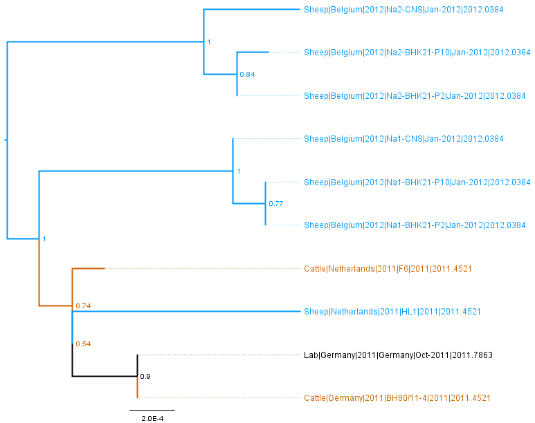

Foot and Mouth Disease Virus
Genome
The Foot and Mouth Disease Virus (FMDV) is an Picornavirus with an single stranded RNA genome, encoding for one polyprotein.
The polyprotein is post-translationally processed into individual proteins, including the surface protein VP1.
See http://viralzone.expasy.org/viralzone/all_by_species/98.html
There are seven main serotypes of FMDV; the Eurasian serotypes are A, C, O and Asia1, and the South African Territories serotypes are SAT1, SAT2, SAT3.
Sequences
FMDV Database
There is a sequence database at Pirbright (last updated 2010)
http://www.wrlfmd.org/fmdv_seqs/fmdv_seq.htm
this has details of individual serotypes, complete genomes and VP1 sequences
Complete Genomes
Carrillo et al performed a study of whole genome FMDV sequences:
Carrillo et al (2005) "Comparative Genomics of Foot-and-Mouth Disease Virus" J. Virol.May 2005 79(10):6487-6504
doi: 10.1128/JVI.79.10.6487-6504.2005
Phylogenetic trees for different regions of the genome, in
Figure 4
The published genome set is on GenBank (see table 1):
PopSet: 46810758
Table 1: Carrillo 2005 - 103 Genome Set (renamed)
| Serotype | Length | Num.Seqs. | FASTA |
| All | 8162 | 103 | Full Genomes |
VP1
FMDV sequences from were downloaded from GenBank on 28th May 2014. Initial processing to extract the VP1 sequences was performed using a custom R script epic_process_background_seqs_fmdv.R, sequences shorter than 500 nucleotides were excluded, followed by some manual editting of the sequence files.
Nucleotide sequences (fasta format) were translated to amino acids for alignment using MUSCLE in MEGA 5.
Neighbour joining trees (newick format) were created in MEGA with the TN93 model, pairwise deletetion, and heterogenous rates between sites and lineages.
Table 1: VP1 with GenBank accession numbers as names - VP1 Sequence information all serotypes
| Serotype | Length | Num.Seqs. | FASTA |
| A | 686 | 677 | A seqs |
| Asia1 | 633 | 226 | Asia1 seqs |
| C | 636 | 29 | A seqs |
| O | 642 | 1203 | O seqs |
| SAT1 | 663 | 38 | SAT1 seqs |
| SAT2 | 648 | 225 | SAT2 seqs |
| SAT3 | 654 | 4 | SAT3 seqs |
Table 2: Individual serotpyes with names in format Host|Country|Year|Strain|Date|DecimalDate for sequences with complete details
Note the smaller number of sequences than above due to the incomplete annotation in GenBank.
| Segment | Length | Num.Seqs. | FASTA | NJ Tree | Strain Information |
| A | 686 | 494 | A seqs | TN93 NJ Tree | Info table |
| Asia1 | 633 | 166 | Asia1 seqs | TN93 NJ Tree | Info table |
| C | 636 | 2 | A seqs | - | Info table |
| O | 642 | 779 | O seqs | TN93 NJ Tree | Info table |
| SAT1 | 663 | 38 | SAT1 seqs | TN93 NJ Tree | Info table |
| SAT2 | 648 | 167 | SAT2 seqs | TN93 NJ Tree | Info table |
| SAT3 | 654 | 4 | SAT3 seqs | - | Info table |
Figures: Maximum Likelihood trees (GTR + gamma distributed rates between sites, and 100 bootstraps) of the three segments.
Taxa are coloured according to host type, Sheep = pale blue, Goat = dark blue, Cattle = brown, Lab = black
Click to zoom.
| Segment S | Segment M | Segment L |
|  |  |  |
| S FigTree File | M FigTree File | L FigTree File |

{kind=link}
{kind=link}
{kind=link}
{kind=link}